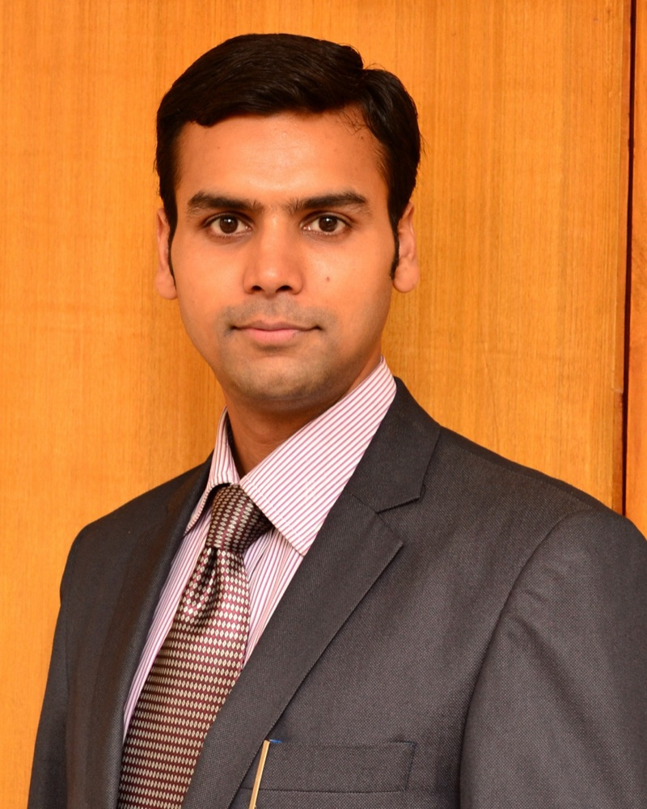

Dr. Rajnish Mallick
Assistant Professor, School of Interdisciplinary Design and Innovation (SIDI), IIITDM Kancheepuram · SSHN Visiting Fellow Professor, ISAE-SUPAERO, Toulouse
Rajnish received his MS and PhD in Aerospace Engineering from the Indian Institute of Science (IISc), Bengaluru, where his work on smart piezoelectric structures for active helicopter vibration control was transferred to HAL. He then spent five years at Rolls-Royce R&D, rising to Staff Data Scientist and AI Hub Lead for India. He then held a postdoctoral fellowship at IISc and served as faculty in Mechanical Engineering at Thapar Institute of Engineering and Technology, before joining IIITDM Kancheepuram in 2024. At AIMS he brings mechanics, materials and machine learning together to design structures that do more with less.
Arise, awake, and stop not till the goal is reached.
Education, experience & honours
- 2009–2014PhD, Aerospace EngineeringIndian Institute of Science (IISc), Bengaluru
- 2009–2011MS, Aerospace EngineeringIndian Institute of Science (IISc), Bengaluru (direct-PhD route)
- 2024–PresentAssistant ProfessorSIDI, IIITDM Kancheepuram
- 2025–PresentSSHN Visiting Fellow ProfessorISAE-SUPAERO, Toulouse (Embassy of France)
- 2021–2024Faculty, Mechanical EngineeringThapar Institute of Engineering and Technology; Vice-President, Entrepreneurship Cell
- 2020–2021Postdoctoral Fellow & Research and Technology LeadNMCAD Lab, Aerospace Engineering, IISc
- 2015–2020Staff Data Scientist & AI Hub Lead, IndiaRolls-Royce plc, R2 Data Labs
- 2008–2009Design EngineerJohn Deere Technology Centre, Pune
- 2025SSHN Visiting FellowshipEmbassy of France in India
- 2022Proposal reviewerU.S. Department of Energy review panel
- 2017Award for Technical ContributionsRolls-Royce
- 2015Global Team Leader, winning team32nd AHS International Student Design Competition (Boeing)
- 2012Aerospace Young Engineer AwardBest PhD research in smart aerospace structures
- 2010Worldwide Engineering Excellence AwardJohn Deere